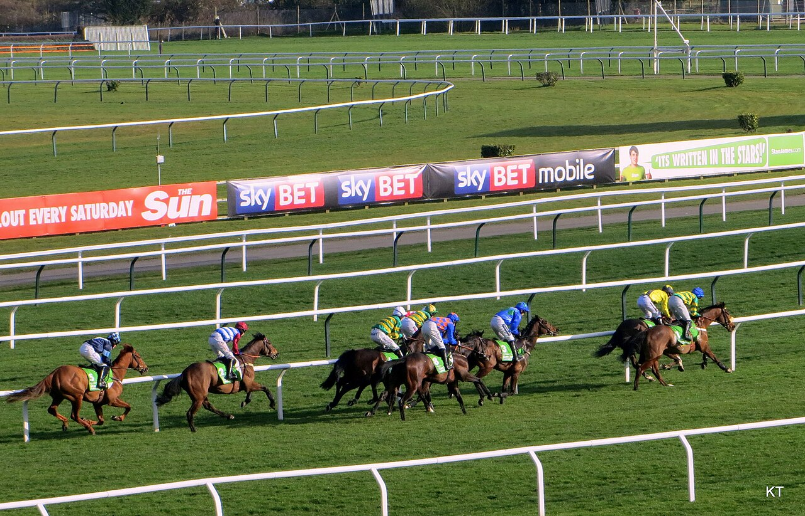

De Bromhead busca en Haydock lo que Willie Mullins aún no ha salido a buscar
Henry de Bromhead inscribe a Heart Wood, Gorgeous Tom y The Big Westerner en la Betfair Chase, y a Koktail Divin en la Graduation Chase, mientras Mullins sigue sin desplazar caballos a Inglaterra.

La estrategia tiene nombre propio: evitar a Willie Mullins. Y las cifras la respaldan. En el Showcase Meeting de Cheltenham, en octubre, Mullins suma un ganador con siete participantes en toda su carrera. De Bromhead lleva cinco victorias con 19 corredores en las últimas cuatro ediciones de esa misma reunión.
En el Cheltenham November Meeting el contraste se repite. Desde 2013, Mullins ha ganado una vez con 21 corredores; De Bromhead, cinco veces con 23 en los últimos ocho años. Es pronto en la temporada para que Mullins cruce el mar con sus caballos, y el preparador de Waterford ha visto el hueco.
El pasado fin de semana en Cheltenham trajo solo tres caballos y un ganador: Elegantemente. Workahead cayó derrotado siendo favorito a cuota corta, y July Flower, a 4/1 para la Paddy Power Gold Cup, fue baja de última hora por el estado del piso.
Ahora la atención pasa a Haydock. De Bromhead tiene inscritos a Heart Wood, Gorgeous Tom y The Big Westerner en la Betfair Chase del sábado. Koktail Divin figura en la Betfair Exchange Graduation Chase, un Grade 1, y Haydock parece el destino más probable para este ejemplar, que también está inscrito en Ascot y Punchestown.
Por Martín Larrañeta